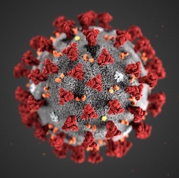
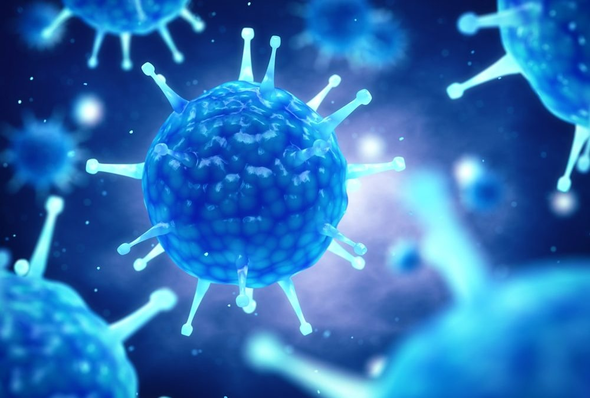
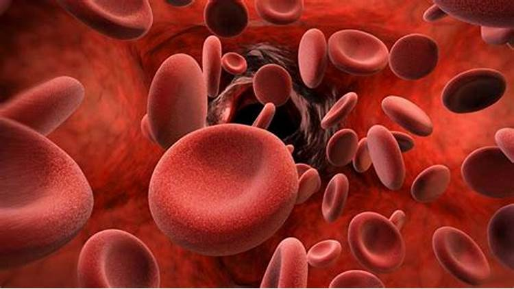
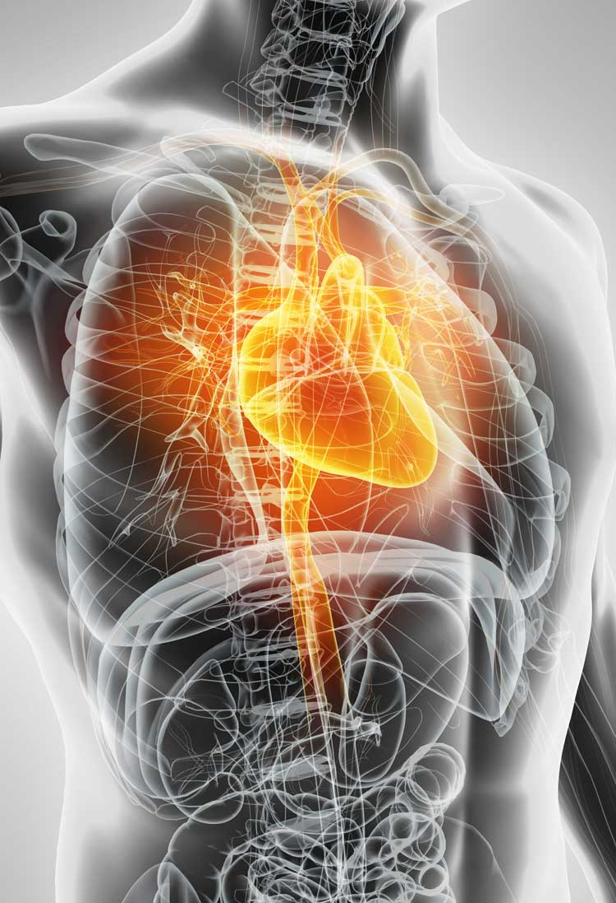

Coronavirus essay in English - Corona Virus which is commonly known as COVID-19 is an infectious disease that causes illness in the respiratory system in humans. The term Covid 19 is sort of an acronym, derived from “Novel Corona Virus Disease 2019”. Corona Virus has affected our day to day life. This pandemic has affected millions of peoples, who are either sick or are being killed due to the spread of this disease.
essay on covid 19
COVID-19 is a new virus that is impacting the whole world badly as it is spreading primarily through contact with the person. It is spread from person to person among those in close contact within 6 feet. Most of the countries have slowed down their manufacturing of the products.
Corana Virus




Coronaviruses are a family of viruses that can cause respiratory illness in humans. They are called “corona” because of crown-like spikes on the surface of the virus. Severe acute respiratory syndrome (SARS), Middle East respiratory syndrome (MERS) and the common cold are examples of coronaviruses that cause illness in humans.
The new strain of coronavirus — SARS-CoV-2 — was first reported in Wuhan, China in December 2019. It has since spread to every country around the world.
Overview
Coronaviruses are a family of viruses that can cause illnesses such as the common cold, severe acute respiratory syndrome (SARS) and Middle East respiratory syndrome (MERS). In 2019, a new coronavirus was identified as the cause of a disease outbreak that originated in China.
The virus is known as severe acute respiratory syndrome coronavirus 2 (SARS-CoV-2). The disease it causes is called coronavirus disease 2019 (COVID-19). In March 2020, the World Health Organization (WHO) declared the COVID-19 outbreak a pandemic.
Public health groups, including the U.S. Centers for Disease Control and Prevention (CDC) and WHO, are monitoring the COVID-19 pandemic and posting updates on their websites. These groups have also issued recommendations for preventing and treating the virus that causes COVID-19.
Symptoms of Covid-19
COVID-19 symptoms vary from person to person. In fact, some infected people don’t develop any symptoms (asymptomatic). In general, people with COVID-19 report some of the following symptoms:
Fever or chills.
Cough.
Shortness of breath or difficulty breathing.
Tiredness.
Muscle or body aches.
Headaches.
New loss of taste or smell.
Sore throat.
Congestion or runny nose.
Nausea or vomiting.
Diarrhea.
Covid-19 In Different Countries
Austria
All COVID-19 entry restrictions have been lifted for those visiting
Russia
Travel to Russia is not advised due to the lack of available flight options to return to Europe, and the increased volatility in the Russian economy.
On 24 February 2022 Russia launched a large scale invasion of Ukraine which is ongoing.
All arrivals into Russia will be temperature checked and will be required to provide a negative PCR test result dated within 48 hours prior to arrival. This applies regardless of vaccination status.
All foreign passengers must complete a travel form before arriving in Russia. These are usually handed out by cabin crew on arriving flights.
Austria
While face masks are no longer required in most parts of the country, you must still wear a FFP2 face mask on public transport and in pharmacies in Vienna.
Belgium
Belgium has now scrapped all its COVID-19 travel restrictions for all visitors.Estonia
Estonia
has scrapped all COVID-19 travel restrictions for visitors from every country.
France
All visitors can now enter France without any COVID paperwork.
It is no longer mandatory to wear a mask in healthcare settings though it is still encouraged.
bbr
Russia
Travel to Russia is not advised due to the lack of available flight options to return to Europe, and the increased volatility in the Russian economy.
On 24 February 2022 Russia launched a large scale invasion of Ukraine which is ongoing.
All arrivals into Russia will be temperature checked and will be required to provide a negative PCR test result dated within 48 hours prior to arrival. This applies regardless of vaccination status.
All foreign passengers must complete a travel form before arriving in Russia. These are usually handed out by cabin crew on arriving flights.
Türkiye (Turkey)
All visitors to Turkey, now called Türkiye, can enter the country with no restrictions whether they have been vaccinated or not.
Turkish Airlines have published a s-by-country breakdown of flight restrictions to Turkiye. br